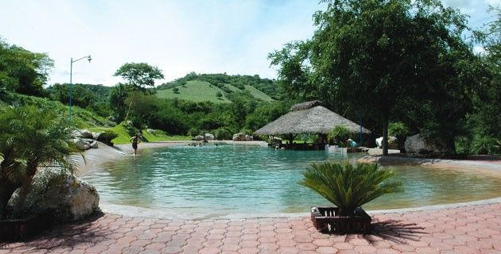
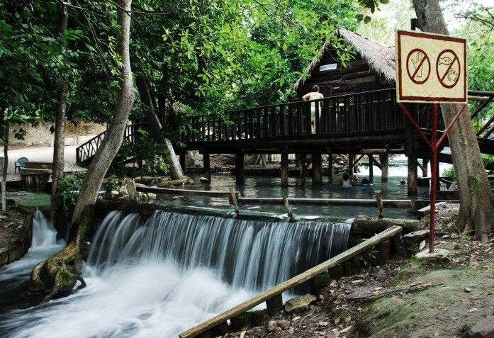

📸 Galería de Imágenes


🏊♂️ Entorno Natural y Reseña
El Balneario Rústico Las Huertas es un encantador oasis natural que destaca por su concepto rústico y su profunda conexión con el entorno natural de la región sur de Morelos. El gran atractivo de este lugar es su manantial de aguas termales que brota constantemente a una deliciosa y cálida temperatura promedio de 31 °C. El caudal del manantial ha sido aprovechado de manera artesanal para crear una serie de pozas naturales escalonadas que asemejan un jacuzzi gigante en medio de la naturaleza.
El parque está diseñado para quienes buscan una experiencia de campamento y desconexión más tradicional y menos comercializada que la de los grandes parques acuáticos. El agua, además de ser sumamente relajante por su temperatura, es rica en minerales. El paisaje se complementa con una densa vegetación, árboles frutales y una hermosa cascada que complementa el cauce del río, ofreciendo un espacio ideal para el descanso, la convivencia familiar y el turismo de aventura.